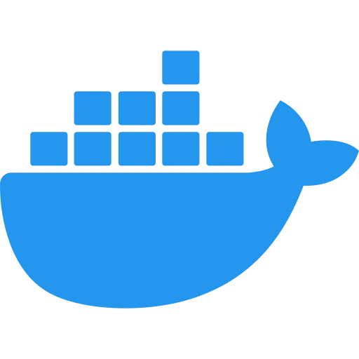
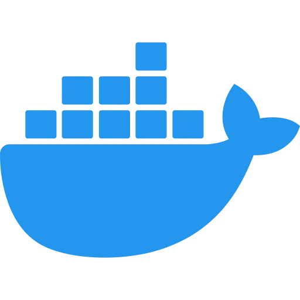

About me
I am currently looking for a job as a sysadmin, DevOps or infrastructure analyst.
I live in San Luis, Argentina. I graduated as a university technician in computer networks at the National University of San Luis (UNSL). In August 2024 I obtained the AWS Cloud Practitioner certification and I am currently studying for the AWS Solutions Architect Associate certification.
To complement my university education, I am continually learning about new technologies in a self-taught way, such as AWS, CI/CD, Docker, Kubernetes, Linux, cloud, among others.
University
My university education covered Linux, servers, Bash scripting, cronjobs, Python programming, the use of SSH, implementation of services and protocols such as DHCP, DNS, HTTP, SMB, among others. I learned about configurations such as creating RAID systems and load balancers, the design and management of LAN networks, highlighting the importance of implementing a DMZ for server protection, and communication between processes and threads (IPC). An important aspect was the focus on network security, I also learned the use of ACLs, firewalls, IDS and proxies.
All of these skills were developed in a hands-on environment using virtual machines via VirtualBox on Ubuntu and Ubuntu Server systems.
For my thesis project, I designed and implemented a network using routers and switches from brands such as Cisco. The network was segmented by VLANs, and I set specific rules in the ACLs to allow or deny traffic, ensuring server protection.
Languages
Programming languages and tools

 



Certifications
Job experience
Mercado Libre
Software developer | April 2022 - June 2024
At Mercado Libre, I specialized in backend development using Java with Spring, implementing unit and integration tests with JUnit and Mockito.
I was responsible for maintaining and optimizing APIs, ensuring their correct operation through validations with Postman and managing version control collaboratively through GitHub.
I worked with relational databases such as MySQL and managed tasks and projects efficiently using Jira. In addition, I performed reliable deployments using the internal tool Fury, where I also used tools such as DataDog and Kibana to view and analyze metrics and data from the APIs.